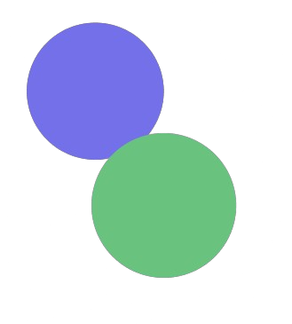

<aside class="bg-gradient-to-br from-gray-800 to-gray-900 -translate-x-80 fixed inset-0 z-50 my-4 ml-4 h-[calc(100vh-32px)] w-72 rounded-xl transition-transform duration-300 xl:translate-x-0">
    <div class="relative border-b border-white/20">
      <a class="flex items-center gap-4 py-6 px-8" href="#/">
        
        <h6 class="block antialiased tracking-normal font-sans text-base font-semibold leading-relaxed text-white">Urbancare</h6>
      </a>
      <button class="middle none font-sans font-medium text-center uppercase transition-all disabled:opacity-50 disabled:shadow-none disabled:pointer-events-none w-8 max-w-[32px] h-8 max-h-[32px] rounded-lg text-xs text-white hover:bg-white/10 active:bg-white/30 absolute right-0 top-0 grid rounded-br-none rounded-tl-none xl:hidden" type="button">
        <span class="absolute top-1/2 left-1/2 transform -translate-y-1/2 -translate-x-1/2">
          <svg xmlns="http://www.w3.org/2000/svg" fill="none" viewBox="0 0 24 24" stroke-width="2.5" stroke="currentColor" aria-hidden="true" class="h-5 w-5 text-white">
            <path stroke-linecap="round" stroke-linejoin="round" d="M6 18L18 6M6 6l12 12"></path>
          </svg>
        </span>
      </button>
    </div>
    <div class="m-4">
      <ul class="mb-4 flex flex-col gap-1">
        <li>
          <a routerLink="/dashboard">
            <button routerLinkActive="bg-gradient-to-tr from-blue-600 to-blue-400 shadow-md shadow-blue-500/20 hover:shadow-lg hover:shadow-blue-500/40 active:opacity-[0.85]" 
                    class="middle none font-sans font-bold center transition-all disabled:opacity-50 disabled:shadow-none disabled:pointer-events-none text-xs py-3 rounded-lg text-white hover:bg-white/10 active:bg-white/30 flex w-full items-center gap-4 px-4 capitalize" type="button">
                    <svg xmlns="http://www.w3.org/2000/svg" fill="none" viewBox="0 0 24 24" stroke-width="1.5" stroke="currentColor" class="size-6">
                      <path stroke-linecap="round" stroke-linejoin="round" d="M3.75 6A2.25 2.25 0 0 1 6 3.75h2.25A2.25 2.25 0 0 1 10.5 6v2.25a2.25 2.25 0 0 1-2.25 2.25H6a2.25 2.25 0 0 1-2.25-2.25V6ZM3.75 15.75A2.25 2.25 0 0 1 6 13.5h2.25a2.25 2.25 0 0 1 2.25 2.25V18a2.25 2.25 0 0 1-2.25 2.25H6A2.25 2.25 0 0 1 3.75 18v-2.25ZM13.5 6a2.25 2.25 0 0 1 2.25-2.25H18A2.25 2.25 0 0 1 20.25 6v2.25A2.25 2.25 0 0 1 18 10.5h-2.25a2.25 2.25 0 0 1-2.25-2.25V6ZM13.5 15.75a2.25 2.25 0 0 1 2.25-2.25H18a2.25 2.25 0 0 1 2.25 2.25V18A2.25 2.25 0 0 1 18 20.25h-2.25A2.25 2.25 0 0 1 13.5 18v-2.25Z" />
                    </svg>                    
              <p class="block antialiased font-sans text-base leading-relaxed text-inherit font-medium capitalize">dashboard</p>
            </button>
          </a>
        </li>
        <li>
          <a routerLink="/eventos">
            <button routerLinkActive="bg-gradient-to-tr from-blue-600 to-blue-400 shadow-md shadow-blue-500/20 hover:shadow-lg hover:shadow-blue-500/40 active:opacity-[0.85]" 
                    class="middle none font-sans font-bold center transition-all disabled:opacity-50 disabled:shadow-none disabled:pointer-events-none text-xs py-3 rounded-lg text-white hover:bg-white/10 active:bg-white/30 flex w-full items-center gap-4 px-4 capitalize" type="button">
                    <svg xmlns="http://www.w3.org/2000/svg" fill="none" viewBox="0 0 24 24" stroke-width="1.5" stroke="currentColor" class="size-6">
                      <path stroke-linecap="round" stroke-linejoin="round" d="M6 6.878V6a2.25 2.25 0 0 1 2.25-2.25h7.5A2.25 2.25 0 0 1 18 6v.878m-12 0c.235-.083.487-.128.75-.128h10.5c.263 0 .515.045.75.128m-12 0A2.25 2.25 0 0 0 4.5 9v.878m13.5-3A2.25 2.25 0 0 1 19.5 9v.878m0 0a2.246 2.246 0 0 0-.75-.128H5.25c-.263 0-.515.045-.75.128m15 0A2.25 2.25 0 0 1 21 12v6a2.25 2.25 0 0 1-2.25 2.25H5.25A2.25 2.25 0 0 1 3 18v-6c0-.98.626-1.813 1.5-2.122" />
                    </svg>
              <p class="block antialiased font-sans text-base leading-relaxed text-inherit font-medium capitalize">eventos</p>
            </button>
          </a>
        </li>
        <li>
          <a routerLink="/colaboradores">
            <button routerLinkActive="bg-gradient-to-tr from-blue-600 to-blue-400 shadow-md shadow-blue-500/20 hover:shadow-lg hover:shadow-blue-500/40 active:opacity-[0.85]" 
                    class="middle none font-sans font-bold center transition-all disabled:opacity-50 disabled:shadow-none disabled:pointer-events-none text-xs py-3 rounded-lg text-white hover:bg-white/10 active:bg-white/30 flex w-full items-center gap-4 px-4 capitalize" type="button">
                    <svg xmlns="http://www.w3.org/2000/svg" fill="none" viewBox="0 0 24 24" stroke-width="1.5" stroke="currentColor" class="size-6">
                      <path stroke-linecap="round" stroke-linejoin="round" d="M18 18.72a9.094 9.094 0 0 0 3.741-.479 3 3 0 0 0-4.682-2.72m.94 3.198.001.031c0 .225-.012.447-.037.666A11.944 11.944 0 0 1 12 21c-2.17 0-4.207-.576-5.963-1.584A6.062 6.062 0 0 1 6 18.719m12 0a5.971 5.971 0 0 0-.941-3.197m0 0A5.995 5.995 0 0 0 12 12.75a5.995 5.995 0 0 0-5.058 2.772m0 0a3 3 0 0 0-4.681 2.72 8.986 8.986 0 0 0 3.74.477m.94-3.197a5.971 5.971 0 0 0-.94 3.197M15 6.75a3 3 0 1 1-6 0 3 3 0 0 1 6 0Zm6 3a2.25 2.25 0 1 1-4.5 0 2.25 2.25 0 0 1 4.5 0Zm-13.5 0a2.25 2.25 0 1 1-4.5 0 2.25 2.25 0 0 1 4.5 0Z" />
                    </svg>  
              <p class="block antialiased font-sans text-base leading-relaxed text-inherit font-medium capitalize">colaboradores</p>
            </button>
          </a>
        </li>
        
      </ul>
      <ul class="mb-4 flex flex-col gap-1">
        <li>
          <a class="" href="#">
            <button class="middle none font-sans font-bold center transition-all disabled:opacity-50 disabled:shadow-none disabled:pointer-events-none text-xs py-3 rounded-lg text-white hover:bg-white/10 active:bg-white/30 w-full flex items-center gap-4 px-4 capitalize" type="button">
              <svg xmlns="http://www.w3.org/2000/svg" fill="none" viewBox="0 0 24 24" stroke-width="1.5" stroke="currentColor" class="size-6">
                <path stroke-linecap="round" stroke-linejoin="round" d="M15.75 9V5.25A2.25 2.25 0 0 0 13.5 3h-6a2.25 2.25 0 0 0-2.25 2.25v13.5A2.25 2.25 0 0 0 7.5 21h6a2.25 2.25 0 0 0 2.25-2.25V15M12 9l-3 3m0 0 3 3m-3-3h12.75" />
              </svg>
              
              <p class="block antialiased font-sans text-base leading-relaxed text-inherit font-medium capitalize">Cerrar Sesión</p>
            </button>
          </a>
        </li>
      </ul>
    </div>
  </aside>
